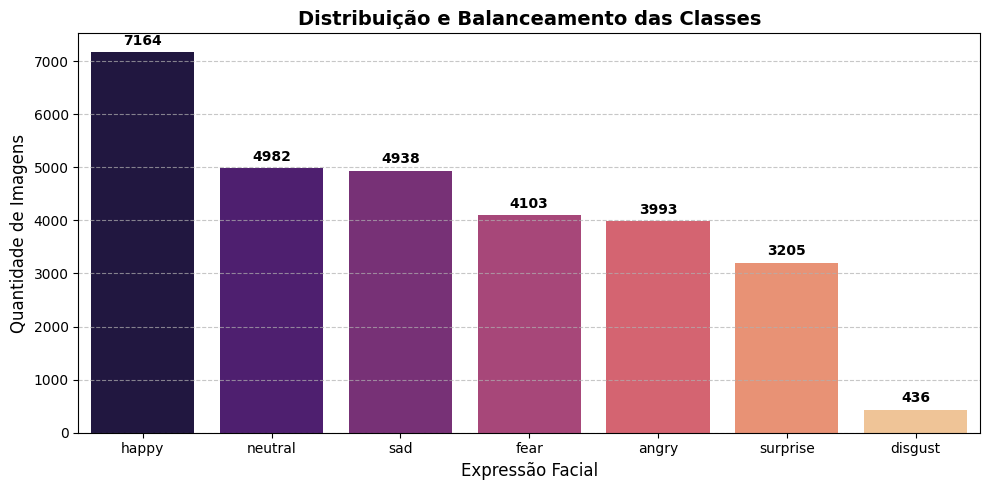

1. Relevância e Objetivo do Problema
O diagnóstico rápido e preciso através do reconhecimento de expressões faciais desempenha um papel fundamental no apoio à saúde mental e na interação homem-máquina. A automação da classificação destas imagens reduz a sobrecarga de análise manual e permite identificar padrões emocionais em tempo real.
2. Análise Exploratória de Dados (EDA)
Visualização e métricas da base de dados utilizada no treino:
Total de Amostras
28.821Total de Classes
7Classe Dominante
Happy (24,8%)Distribuição e Balanceamento das Classes

Insight da EDA: A base apresenta um desbalanceamento acentuado, especialmente na classe disgust (apenas 1,5% do total). Na próxima etapa, aplicaremos técnicas de Data Augmentation e pesos de classe para corrigir este impacto.
3. Protótipo da Aplicação (Testar Modelo)
Área reservada para o utilizador submeter uma imagem e obter a classificação de expressão facial na Etapa 2.
Arraste uma imagem de um rosto aqui ou clique para selecionar